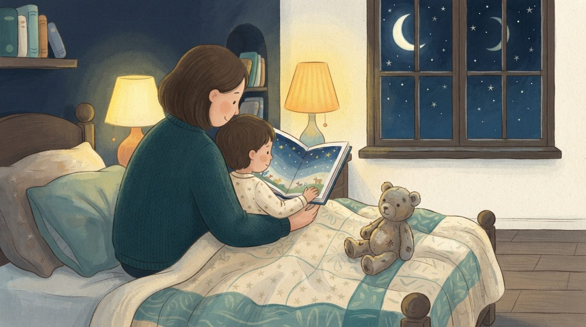

The Story Corner › Parents
Learning to read vs. choosing to read: why the bedtime story still matters

Every year, HarperCollins Children's Books and Farshore publish a review of children's reading for pleasure. The 2026 edition, built on NielsenIQ data and research with The Reading Agency, carries a pointed theme: there is a difference between a child who can read and a child who chooses to.
The report's argument is that literacy can be taught and tested, while the love of reading has to be encouraged, modelled and kept free of pressure. When reading at home starts to feel like more homework, some children quietly stop picking up books on their own. Its practical answer is a regular reading routine: a predictable, relaxed moment with a book that children come to look forward to.
That matters because shared reading has been slipping. An Education Week report in 2025 found that only about a third of parents of five- to seven-year-olds said they regularly read to their children.
Five ways to make bedtime reading feel like a treat
- Let your child choose the book, even if it's the same one every night.
- Keep it short. Ten unhurried minutes beat a rushed half hour.
- Do the voices. Children remember the silly ones for years.
- Talk about the pictures and ask what they think happens next.
- Never use reading as a punishment or a chore to tick off.
Dim the lights, put the phones in another room and end with the same closing words each night. The ritual itself tells a child's body it is time to rest.
Sources

The story of Prophet Nuh and the Great Ark, told with warmth for young children: patience, faith and kindness.
See the book